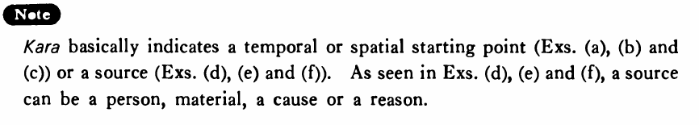

から (1) (B. 176)
- (ks).
- パーティーは八時から始まる・始まります。
- The party starts from eight o'clock.
- (a).
- 今日の授業は一時から三時までです。
- Today's class is from one o'clock till three o'clock.
- (b).
- このバスはニューヨークから来た。
- This bus came from New York.
- (c).
- ここから富士山が見えるよ。
- You can see Mt. Fuji from here.
- (d).
- そのタイプライターは誰から借りたんですか。
- Who did you borrow the typewriter from?
- (e).
- 酒は米から作る。
- Sake is made out of rice.
- (f).
- つまらないことから喧嘩になった。
- We started a quarrel over a trifle.
